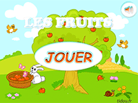
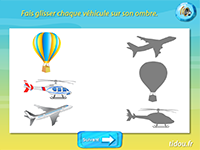
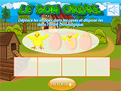
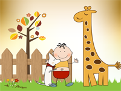
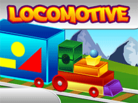
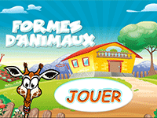
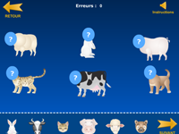

here are some games for fun to your child
Game of shadows, fruits
This educational game allows you to learn to compare and associate shapes. When he puts the fruit in the right place, the child hears their name and learns to recognize it.
How to play: slide each fruit on its shadow then press the button with the arrow to access the next page.

Means of transport, game of shadows
This game of shadows is sound, it is for children of small and medium kindergarten.
How to play: Take a good look at the images and drag each vehicle onto its shadow.
When you have finished a level, click on the button with the arrow to continue

Storing the pictures: the birth of the chick
From the egg to the chick. Arrange the images in chronological order by dragging them on the boxes. When you have finished, click on the button "Validate"

Game of shadows online; animals
Sound game that teaches children the names of animals.
Drag each animal onto the corresponding shadow and press the arrow to continue

Online puzzle 4 pieces: the giraffe and the dog
Reconstitute the image of the puzzle. To do this, press the pieces of the puzzle and drag them by holding down the left mouse button or pressing your finger

Locomotive shapes
Online drag and drop game for toddlers. We must find the shadow of each form.
How to play: Drag the shapes and place them in the right place on the cars.

Shadows game, animal shapes
The game of shadows is intended to make work the sense of observation and analysis of children in kindergarten, small and medium section.
How to play: Take a good look at the pictures and drag the animals on their shadow.
When you have finished one level, another set of animals will appear

Funny animals; farm animals
Restores the animals on the farm. To do this, slide each head on the corresponding animal.
